Publications
* Advised student · ** Co-advised student · † Invited paper
Journal articles · Conferences · Reports and theses · Data · Patent · Books and chapters · Presentation recordings
Refereed journal articles
-
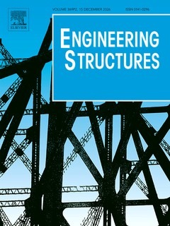
J21Kyoungyeon Lee*, Georgios Tsampras (2026), Suspended-floor Building Systems: Historical Overview and State-of-the-art Review, Engineering Structures, (Under Review) Under review BibTeX -
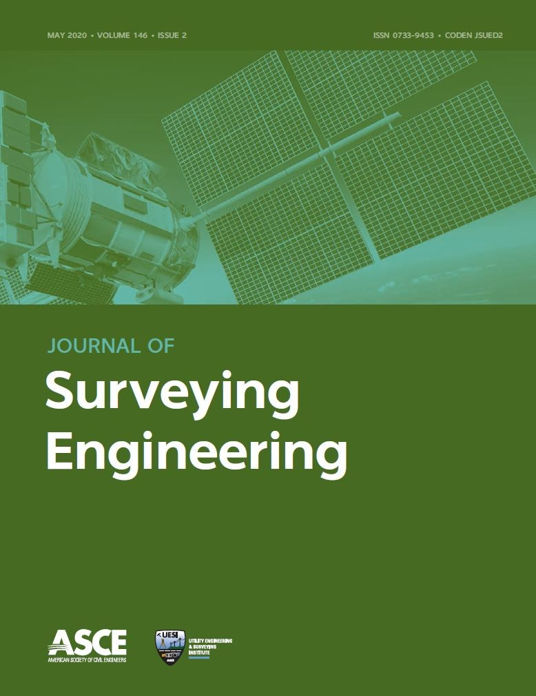
J20Kanoa Pick, Kaden Quinn, Nicholas Cirrito, Ashton Domi, Georgios Tsampras, Falk Feddersen (2026), BathyBoard: A Surfboard-Based Platform for Measuring Surf Zone Bathymetry, ASCE Journal of Surveying Engineering, 153(1), 04026014, doi: 10.1061/JSUED2.SUENG-1758 DOI BibTeX PDF -
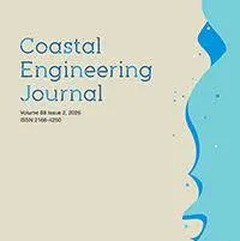
J19Andrew S. Davey**, Falk Feddersen, Georgios Tsampras (2026), A STereo imaging system for Overturning wave KinEmatiCs and dynAMics (STOKECAM), Coastal Engineering Journal, doi: 10.1080/21664250.2026.2762549 DOI BibTeX -
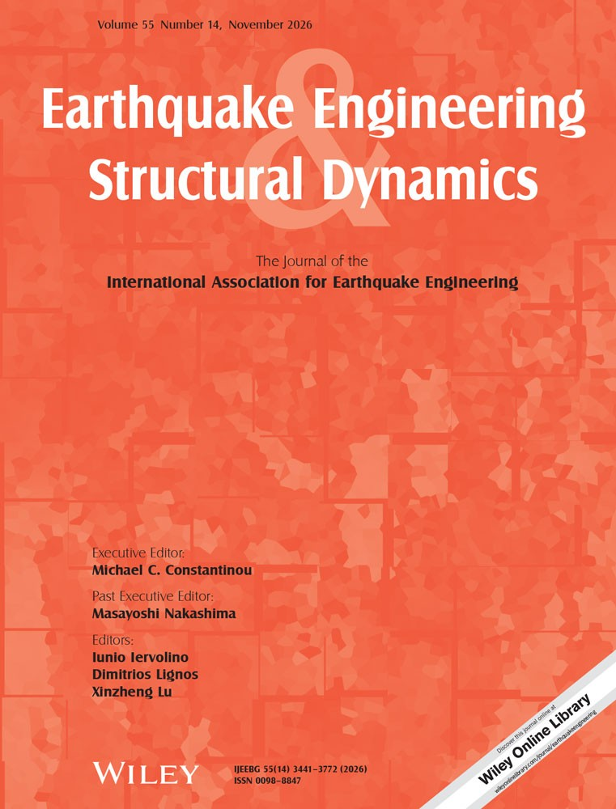
J18Kaixin Chen*, Georgios Tsampras, Chung-Che Chou, Huang-Zuo Lin, Chi-Jeng Wu, Alvaro Córdova, Chia-Ming Uang, Shih-Ho Chao (2026), Low-cost friction-based force-limiting connection with reduced sensitivity to machining tolerances and accelerated repairability, Earthquake Engineering & Structural Dynamics, 55(6), 1270–1291, doi: 10.1002/eqe.70121 DOI BibTeX PDF -
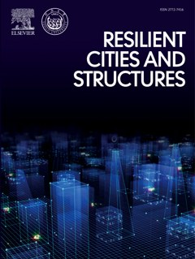
J17Georgios Tsampras†, Richard Sause (2025), Reducing the magnitude and variability of seismic-induced acceleration and force responses in steel buildings with controlled rocking base mechanism and force-limiting connections, Resilient Cities and Structures, 4(4), 143–157, doi: 10.1016/j.rcns.2025.12.004 DOI BibTeX PDF -
J16
C. Franco Mayorga*, Georgios Tsampras (2025), Assessment of Seismic Design Provisions for Floor Diaphragms and Higher-Mode Responses Using Data from Instrumented Buildings in California, Earthquake Spectra, 41(5), 3826–3857, doi: 10.1177/87552930251377781 DOI BibTeX PDF
-
J15
Chung-Che Chou, Chi-Jeng Wu, Li-Yu Huang, Alvaro Córdova, Huang-Zuo Lin, Shu-Hsien Chao, Georgios Tsampras, Chia-Ming Uang, Shih-Ho Chao, Hsin-Yang Chung (2025), Shaking Table Tests of a Three-Story Re-Centering Steel Braced Frame with Sliding Slab Connected to Energy Dissipation Devices, Earthquake Engineering & Structural Dynamics, 54(15), 3746–3767, doi: 10.1002/eqe.70053 DOI BibTeX PDF
-
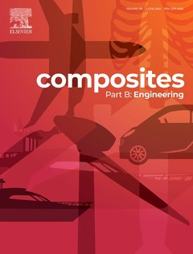
J14Kaixin Chen*, Georgios Tsampras, Shivaglal Cheruvalath, Mary Thundathil (2025), Experimental Characterization of Mechanical and Tribological Properties of Composite Materials for Friction-based Force-limiting Structural Components, Composites Part B: Engineering, 302, 112472, doi: 10.1016/j.compositesb.2025.112472 DOI BibTeX PDF -
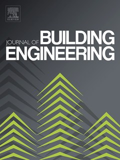
J13Georgios Tsampras, Richard Zabel, Kaixin Chen* (2025), Experimental investigation of edge distance effects on uplift response in OSB sheathing-to-framing nailed connections using digital image correlation, Journal of Building Engineering, 111, 113348, doi: 10.1016/j.jobe.2025.113348 DOI BibTeX PDF -
J12
Alvaro Córdova, Chung-Che Chou, Chi-Jeng Wu, Georgios Tsampras, Chia-Ming Uang, Shih-Ho Chao (2025), Modeling and Response of a Three-Story Steel Building with Sliding Slabs in Earthquake Motions, Earthquake Engineering & Structural Dynamics, 54(3), 1101–1121, doi: 10.1002/eqe.4300 DOI BibTeX PDF
-
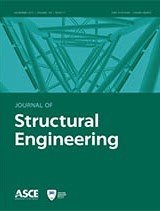
J11Kyoungyeon Lee*, Georgios Tsampras, C. Franco Mayorga* (2024), Reinforced Concrete Core Wall Buildings with Modified Friction-Based Force-Limiting Connections: Connection Design Considerations and Three-Dimensional Response to Bidirectional Ground Motions, ASCE Journal of Structural Engineering, 151(2), 04024203, doi: 10.1061/JSENDH.STENG-13609 DOI BibTeX PDF -
J10
Chung-Che Chou, Huang-Zuo Lin, Alvaro Córdova, Jian-Ming Chen, Yen-Hsun Chou, Shu-Hsien Chao, Shih-Ho Chao, Georgios Tsampras, Chia-Ming Uang, Hsin-Yang Chung, Chin-Hsiung Loh, Hsuan-Teh Hu (2024), Earthquake simulator testing of a three-story steel building for evaluating built-up box column performance and effect of sliding slab, Earthquake Engineering & Structural Dynamics, 53(9), 2637–2655, doi: 10.1002/eqe.4130 DOI BibTeX PDF
-
J9
C. Franco Mayorga*, Georgios Tsampras (2024), Reinforced concrete wall buildings with force-limiting connections: Modeling effects and uncertainty propagation, Earthquake Engineering & Structural Dynamics, 53(4), 1465–1491, doi: 10.1002/eqe.4073 DOI BibTeX PDF
-
J8
Kaixin Chen*, Georgios Tsampras†, Kyoungyeon Lee* (2023), Structural connection with predetermined discrete variable friction forces, Resilient Cities and Structures, Resilience of Structures to Earthquakes, 2(1), 1–17, doi: 10.1016/j.rcns.2023.02.006 DOI BibTeX PDF
-
J7
Georgios Tsampras, Richard Sause (2022), Force-based design method for force-limiting deformable connections in earthquake-resistant buildings, ASCE Journal of Structural Engineering, 148(10), 04022150, doi: 10.1061/(ASCE)ST.1943-541X.0003456 DOI BibTeX PDF
-
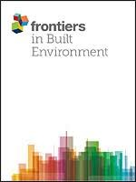
J6Lelli Van Den Einde, Joel P. Conte, José I. Restrepo, Ricardo Bustamante, Marty Halvorson, Tara C. Hutchinson, Chin-Ta Lai, Koorosh Lotfizadeh, J. Enrique Luco, Machel L. Morrison, Gilberto Mosqueda, Mike Nemeth, Ozgur Ozcelik, Sebastian Restrepo, Andrés Rodriguez, P. Benson Shing, Brad Thoen, Georgios Tsampras (2021), NHERI@UC San Diego 6-DOF Large High-Performance Outdoor Shake Table Facility, Frontiers in Built Environment, 6, 580333, doi: 10.3389/fbuil.2020.580333 DOI BibTeX PDF -
J5
Zhi Zhang, Robert B. Fleischman, José I. Restrepo, Gabriele Guerrini, Arpit Nema, Dichuan Zhang, Ulina Shakya, Georgios Tsampras, Richard Sause (2018), Shake table test performance of an inertial force-limiting floor anchorage system, Earthquake Engineering & Structural Dynamics, 47(10), 1987–2011, doi: 10.1002/eqe.3047 DOI Video BibTeX PDF
-
J4
Georgios Tsampras, Richard Sause, Robert B. Fleischman, José I. Restrepo (2017), Experimental study of deformable connection consisting of friction device and rubber bearings to connect floor system to lateral force resisting system, Earthquake Engineering & Structural Dynamics, 47(4), 1032–1053, doi: 10.1002/eqe.3004 DOI Video BibTeX PDF
-
J3
Georgios Tsampras, Richard Sause, Robert B. Fleischman, José I. Restrepo (2016), Experimental study of deformable connection consisting of buckling-restrained brace and rubber bearings to connect floor system to lateral force resisting system, Earthquake Engineering & Structural Dynamics, 46(8), 1287–1305, doi: 10.1002/eqe.2856 DOI Video BibTeX PDF
-
J2
Georgios Tsampras, Richard Sause, Dichuan Zhang, Robert B. Fleischman, José I. Restrepo, David Mar, Joseph Maffei (2016), Development of deformable connection for earthquake-resistant buildings to reduce floor accelerations and force responses, Earthquake Engineering & Structural Dynamics, 45(9), 1473–1494, doi: 10.1002/eqe.2718 DOI BibTeX PDF
-
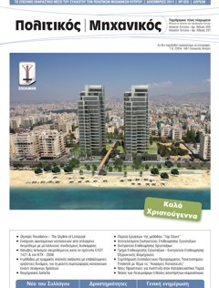
J1
Conference proceedings, abstracts and presentations
- C46
-
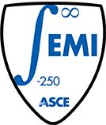
C45 - C44
-
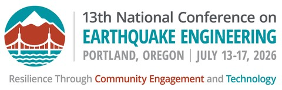
C43Chung-Che Chou, Chi-Jeng Wu, Li-Yu Huang, Alvaro Córdova, Huang-Zuo Lin, Shu-Hsien Chao, Georgios Tsampras, Chia-Ming Uang, Shih-Ho Chao, Hsin-Yang Chung (2026), Shaking Table Tests of a Novel Three-Story Re-Centering Steel Braced Frame with Sliding Slab for Earthquake Force Reduction, 13th National Conference on Earthquake Engineering, Portland, Oregon BibTeX PDF -
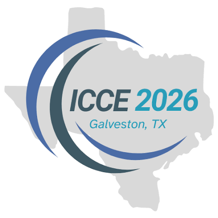
C42 - C41
- C40
- C39
-
C38
Kaixin Chen*, Georgios Tsampras (2025), Development and preliminary experimental characterization of a novel friction-based structural connection with predetermined discrete variable friction forces for high-performance earthquake-resistant buildings, 19th World Conference on Seismic Isolation, Energy Dissipation and Active Vibration Control of Structures, University of California, Berkeley, CA BibTeX PDF
- C37
-
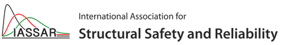
C36 -
C35
Xianjue Deng**, P. Benson Shing, Ahmed Elgamal, Georgios Tsampras (2025), Nonlinear Dynamic Soil-structure Interaction Analysis of Reinforced Concrete Tunnel Linings, ASCE Engineering Mechanics Institute Conference, Anaheim, CA, USA BibTeX
- C34
- C33
-
C32
C. Franco Mayorga*, Georgios Tsampras, Paolo Bocchini, Sena Mursel (2024), Overview of a project on resilience-based design of buildings with accelerated post-earthquake functional recovery, 18th U.S.-Japan-New Zealand Workshop on the Improvement of Structural Engineering and Resilience, Applied Technology Council, San Diego BibTeX PDF Slides
- C31
-
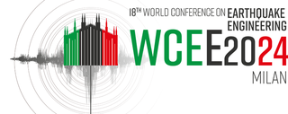
C30 - C29
- C28
- C27
- C26
- C25
- C24
-
C23
Kyoungyeon Lee*, Georgios Tsampras, C. Franco Mayorga*, Kaixin Chen* (2024), Controlling higher-mode seismic responses in reinforced concrete core wall buildings using force-limiting floor-to-wall connections, Natural Hazards Research Summit 2024, DesignSafe-CI, https://doi.org/10.17603/ds2-q1vy-sb09 DOI BibTeX Poster
-
C22
C. Franco Mayorga*, Georgios Tsampras (2024), Modeling effects and uncertainty propagation in reinforced concrete wall buildings with force-limiting connections, NHERI Computational Symposium, Los Angeles, CA, USA BibTeX
-
C21
C. Franco Mayorga*, Georgios Tsampras (2023), Validation of Seismic Design Provisions for Diaphragms and Assessment of Higher-Mode Responses on Earthquake-Resistant Buildings – Second Project Update, SMIP23 Seminar on Utilization of Strong-Motion Data, California Strong Motion Instrumentation Program, Sacramento, USA DOI Video BibTeX
- C20
-
C19
Kyoungyeon Lee*, Georgios Tsampras (2023), Seismic response of core wall building with force-limiting connections, Engineering Mechanics Institute Conference, Atlanta, Georgia, USA BibTeX
-
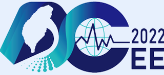
C18Chung-Che Chou, Alvaro Córdova, Huang-Zuo Lin, Jian-Ming Chen, Yen-Hsun Chou, Shu-Hsien Chao, Shih-Ho Chao, Georgios Tsampras, Chia-Ming Uang, Hsin-Yang Chung, Hsuan-Teh Hu, Chin-Hsiung Loh (2022), Analysis and test plan for a three-story steel BRBF with a sliding slab to reduce seismic lateral force in shake table tests, 8th Asia Conference on Earthquake Engineering, Taipei, Taiwan BibTeX PDF - C17
-
C16
C. Franco Mayorga*, Georgios Tsampras (2022), Validation of Seismic Design Provisions for Diaphragms and Assessment of Higher-Mode Responses on Earthquake-Resistant Buildings, SMIP22 Seminar on Utilization of Strong-Motion Data, California Strong Motion Instrumentation Program, Sacramento, USA DOI Video BibTeX PDF
- C15
- C14
-
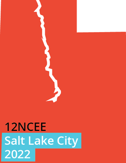
C13Georgios Tsampras, Richard Sause, Robert B. Fleischman, José I. Restrepo, Arpit Nema, Zhi Zhang (2022), Practical force-limiting deformable connections in buildings with rocking base mechanism and limited higher-mode responses, 12th National Conference on Earthquake Engineering, Utah, USA BibTeX Abstract Slides - C12
- C11
- C10
-
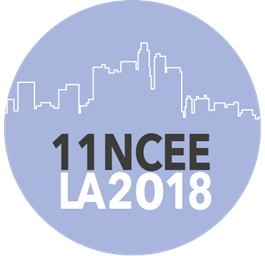
C9Georgios Tsampras, Richard Sause, Robert B. Fleischman, José I. Restrepo, Zhi Zhang, Ulina Shakya, Dichuan Zhang, Joseph Maffei, David Mar (2018), Experimental study of connection between floor system and lateral force resisting system, 11th National Conference on Earthquake Engineering, CA, USA PDF BibTeX PDF -
C8
Zhi Zhang, Arpit Nema, Gabriele Guerrini, Ulina Shakya, Georgios Tsampras, Robert B. Fleischman, José I. Restrepo, Richard Sause, Dichuan Zhang, Joseph Maffei, David Mar, Giorgio Monti (2018), An inertial force-limiting floor anchorage system for low-damage building structures, 11th National Conference on Earthquake Engineering, CA, USA PDF BibTeX PDF
-
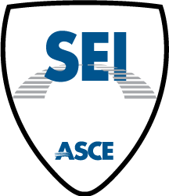
C7Georgios Tsampras, Richard Sause, Robert B. Fleischman, José I. Restrepo, Dichuan Zhang, Zhi Zhang (2017), Experimental study of deformable connection between floor system and lateral force resisting system for earthquake-resistant buildings, ASCE Structures Congress 2017, Denver, CO, USA BibTeX - C6
-
C5
Georgios Tsampras, Richard Sause, Robert B. Fleischman, José I. Restrepo, Joseph Maffei, David Mar (2015), Experimental validation of an earthquake-resistant building system to control floor accelerations, ASCE Structures Congress 2015, Portland, OR, USA BibTeX
-
C4
Robert B. Fleischman, José I. Restrepo, Arpit Nema, Dichuan Zhang, Ulina Shakya, Zhi Zhang, Richard Sause, Georgios Tsampras, Giorgio Monti (2015), Inertial force-limiting anchorage system for seismic resistant building structures, ASCE Structures Congress 2015, Portland, OR, USA, 1302–1313 BibTeX PDF
- C3
-
C2
Georgios Tsampras, Richard Sause, Robert B. Fleischman, José I. Restrepo (2014), Experimental validation of an innovative earthquake-resistant building system to control floor accelerations and limit inertia forces, 10th U.S. National Conference on Earthquake Engineering, Anchorage, AK, USA BibTeX
- C1
Technical reports and theses
- R8
- R7
- R6
- R5
-
R4
Georgios Tsampras (2016), Force-Limiting Deformable Floor Diaphragm Connection for Earthquake-Resistant Buildings, PhD Dissertation, Lehigh University, Bethlehem, PA, USA Link Videos (4) BibTeX
-
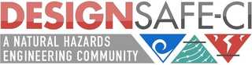
R3 - R2
-
R1
Georgios Tsampras (2012), Parametric Study of Inelastic Response in Planar Steel Moment Resisting Frames, M.Sc. Thesis, Department of Civil Engineering, University of Patras, Greece [Greek], http://hdl.handle.net/10889/4963 Link BibTeX
Data
- D4
- D3
- D2
- D1
Patent
-
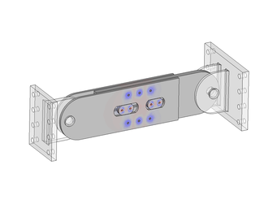
P1Georgios Tsampras, Kaixin Chen* (2026), Friction devices for energy dissipation, U.S. Patent US12612797B2, https://patents.google.com/patent/US12612797B2/en Patent BibTeX PDF
Books and book chapters
-
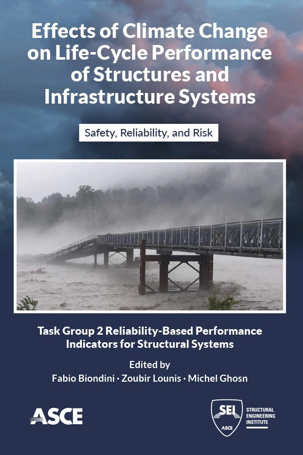
B2Fabio Biondini, Zoubir Lounis, Michel Ghosn, Jason Giovannettone, Bruce R. Ellingwood, Dan M. Frangopol, Teng Wu, Paolo Bocchini, Kyle Haas, Graziano Fiorillo, Georgios Tsampras, Kostas G. Papakonstantinou, Luca Capacci (2024), International Workshop Overview and Outcomes, pp. 329–348 in Effects of Climate Change on Life-Cycle Performance of Structures and Infrastructure Systems, ASCE, https://doi.org/10.1061/9780784485804.app2 DOI BibTeX -
B1
Bruce R. Ellingwood, Paolo Bocchini, Zoubir Lounis, Michel Ghosn, Ming Liu, David Yang, Luca Capacci, Sofia Diniz, Ning Lin, George Tsiatas, Fabio Biondini, John van de Lindt, Dan M. Frangopol, Mitsuyoshi Akiyama, Yue Li, Michele Barbato, Hanping Hong, Therese McAllister, Georgios Tsampras, Farshid Vahedifard (2024), Impact of Climate Change on Infrastructure Performance, pp. 115–206 in Effects of Climate Change on Life-Cycle Performance of Structures and Infrastructure Systems, ASCE, https://doi.org/10.1061/9780784485804.ch3 DOI BibTeX
Presentation recordings
Resilience-based design of buildings with accelerated post-earthquake functional recovery — 2026 NIST-NSF DRRG Symposium
Friction-based force-limiting connections — 2025 PEER Annual Meeting, UC Berkeley
Resilience-based design of buildings with accelerated post-earthquake functional recovery — 2024 NIST DRRG Symposium
Recording on the NIST site (our talk starts at 1:41:11).
Validation of seismic design provisions for diaphragms and assessment of higher-mode responses — SMIP23 Seminar
C. Franco Mayorga and Georgios Tsampras, SMIP23 Seminar on Utilization of Strong-Motion Data, California Strong Motion Instrumentation Program, Sacramento.
Reusable force-limiting connection with variable friction force for high-performance buildings — 8th Asia Conference on Earthquake Engineering
Recording on the 8ACEE site.
Validation of seismic design provisions for diaphragms and assessment of higher-mode responses — SMIP22 Seminar
Deformable connections with buckling-restrained brace or friction device and rubber bearings — experiments
Shake table test of an inertial force-limiting floor anchorage system
Georgios Tsampras PhD Dissertation, Part 1: Introduction, acknowledgements, development
Georgios Tsampras PhD Dissertation, Part 2: Mitigation of higher-mode seismic responses
Georgios Tsampras PhD Dissertation, Part 3: Experiments
Georgios Tsampras PhD Dissertation, Part 4: Force-based design method for force-limiting deformable connections